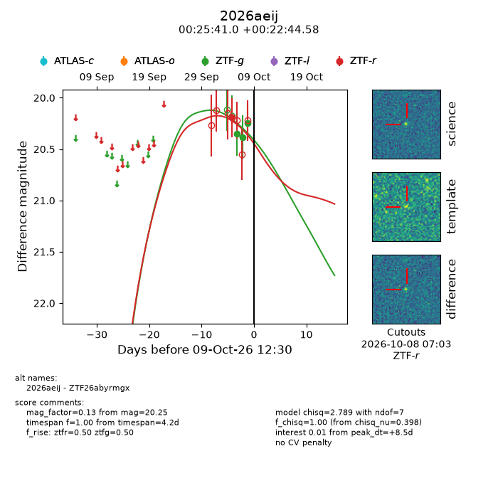
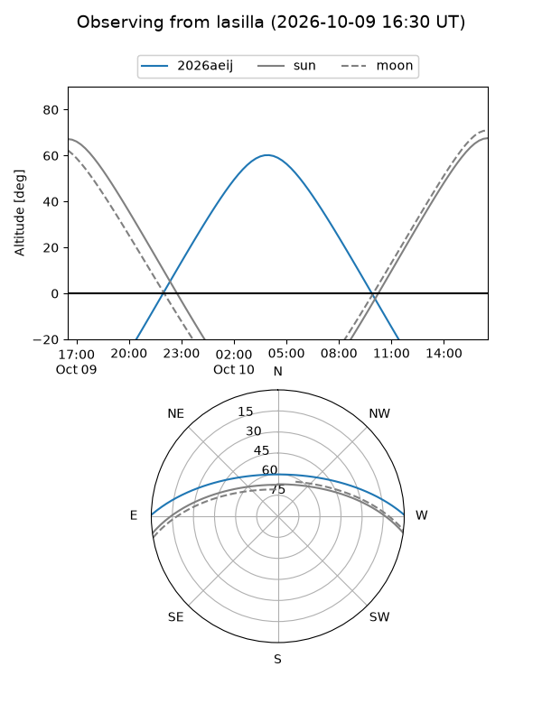
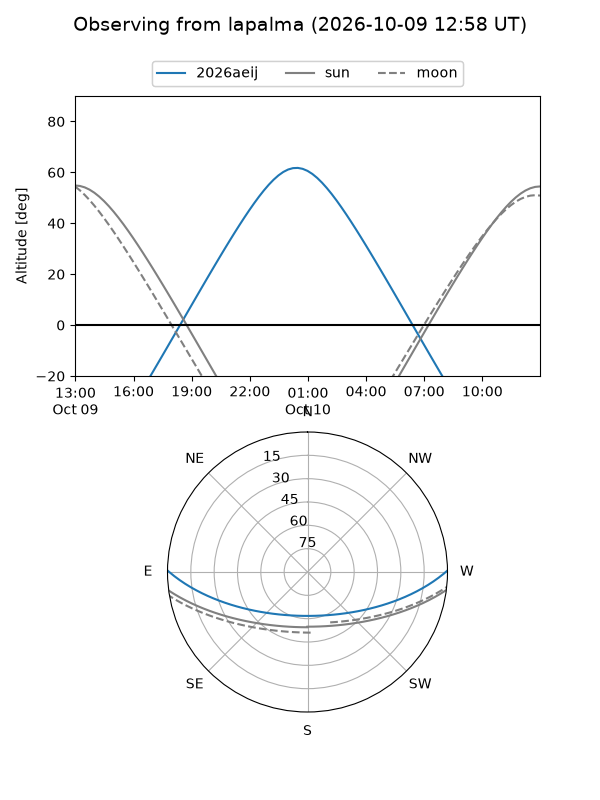
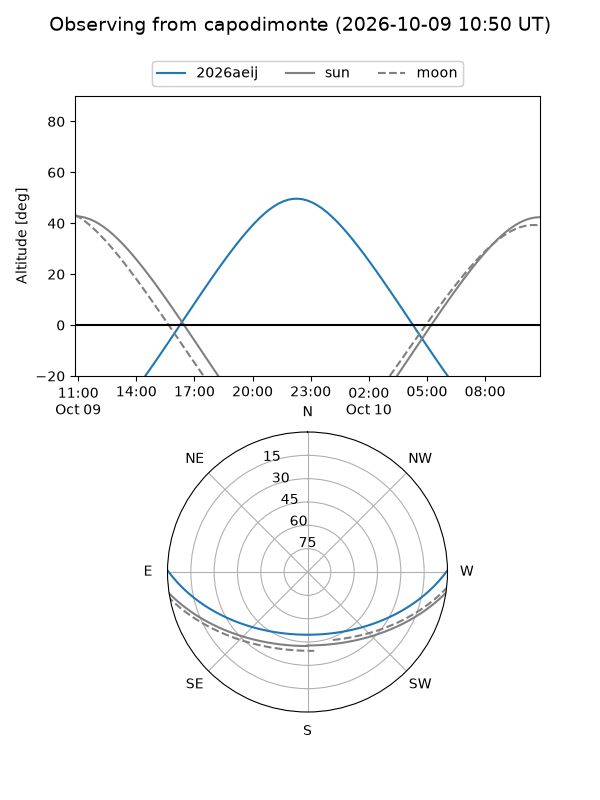
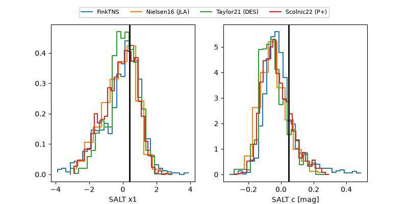

2026aeij
Target 2026aeij at 2026-10-09 12:32
Aliases and brokers:
FINK-ZTF: ztf.fink-portal.org/ZTF26abyrmgx
Lasair-ZTF: lasair-ztf.lsst.ac.uk/objects/ZTF26abyrmgx
ALeRCE-ZTF: alerce.online/object/ZTF26abyrmgx
YSE-PZ: ziggy.ucolick.org/yse/transient_detail/2026aeij
TNS name: wis-tns.org/object/2026aeij
Direct TNS query: direct search
alt names
ZTF26abyrmgx (ztf,fink_ztf)
2026aeij (tns,yse)
Coordinates:
equatorial (ra, dec) = 6.4210,+0.37905
equatorial (HMS+DMS) = 00:25:41.04,+00:22:44.58
galactic (l, b) = (109.2031,-61.80429)
Flags:
peak dt: +8.5
Photometry:
last ztfg=20.25, ztfr=20.19
3 ztfg, 1 ztfr detections
Lightcurve

Visibility



Additional plots
